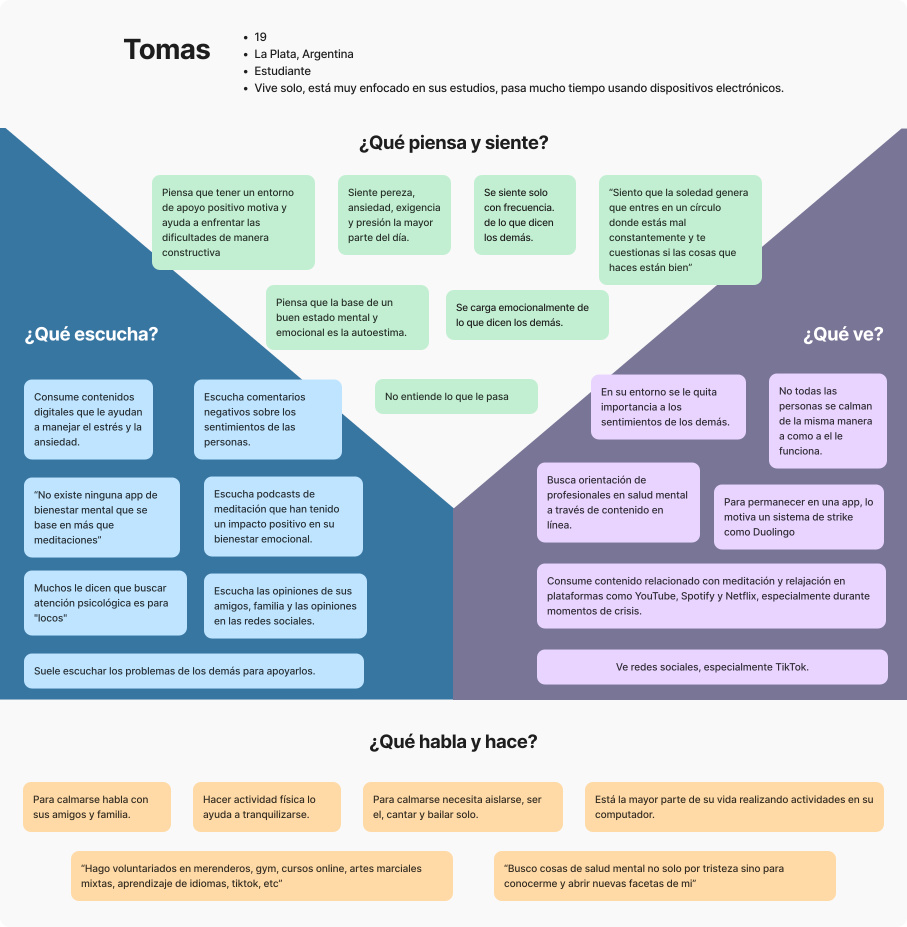
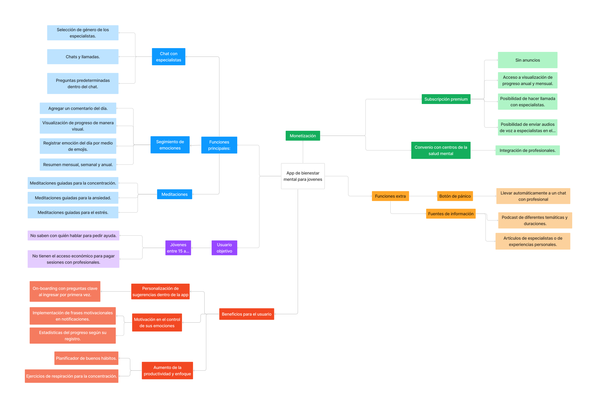
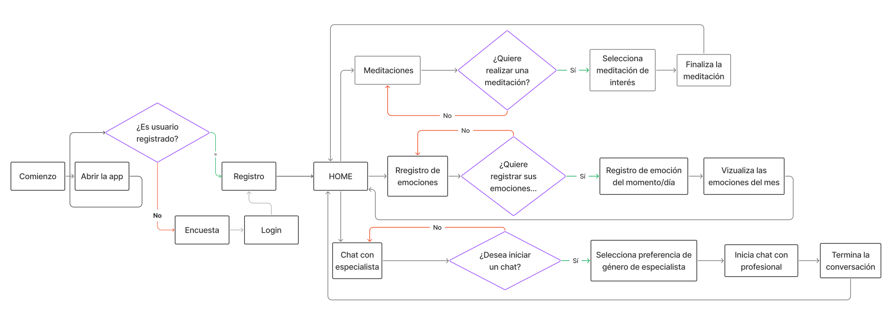
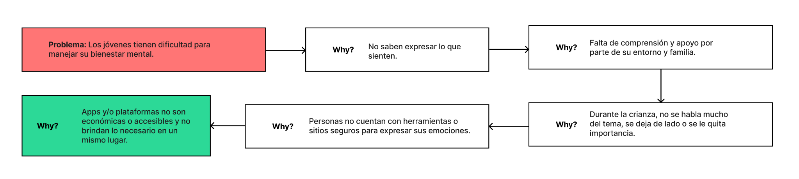

Contexto
¿Qué es Alma?
App de bienestar mental para jóvenes
Reúne en un solo lugar tres herramientas que generalmente están separadas: meditaciones guiadas, registro emocional diario y acceso a profesionales. Modelo freemium para reducir las barreras económicas que alejan a los jóvenes de la ayuda que necesitan.
Problema Raíz
Nada cubre todo en un lugar accesible
Las apps disponibles defraudan: ofrecen solo meditaciones, tienen interfaces sobrecargadas o requieren suscripciones costosas. No existe en el mercado latinoamericano una solución integral, simple y económica de salud mental para jóvenes.
Investigación
"Las apps solo ofrecen meditaciones, pero yo necesito que alguien me escuche." — Usuario entrevistado
8 entrevistas
Cuestionario en 5 áreas: contexto personal, experiencias previas, funcionalidades deseadas, seguimiento emocional e interacción con profesionales.
Mapa de empatía
Los usuarios sienten ansiedad, soledad y presión constante. Tienen que fingir estar bien. Sus emociones son minimizadas por su entorno.
6 clusters de oportunidad
Necesidad de profesionales · Apps insuficientes · Seguimiento emocional · Distracciones · Interfaz simple · Publicación de artículos.
Mapa de empatía

User persona

Definición
Benchmark
Headspace
Interfaz atractiva pero restringe el contenido tras el período gratuito. Genera frustración en usuarios que no pueden pagar.
Yana
Apoyo emocional con IA, pero conversaciones limitadas sin suscripción. No satisface la necesidad de conexión real.
Meditopía
Incluye meditaciones, artículos y registro emocional pero la interfaz sobrecargada confunde a los usuarios desde el inicio.
MVP Definido - Funcionalidades básicas
Chat con profesionales verificados
Meditaciones guiadas por categoría
Registro emocional con calendario
Onboarding personalizado desde el inicio
Idea + Prototipo
MAPA MENTAL

Se diseñó el mapa mental para determinar la organización de secciones y jerarquía de la información dentro de la aplicación.
USER FLOW

El user flow permitió visualizar el posible recorrido de un usuario en la aplicación, lo que permite entender qué secciones tienen prioridad jerárquica y qué no puede estar funcionando.
5 WHYS

Realizar los 5 whys permitió comprender el propósito de la app móvil, trabajando como guía para regresar constantemente a los dolores y necesidades para siempre tenerlos en cuenta a la hora del prototipado.
Prototipo
Testeo e iteración
5 usuarios testeados · Perfiles: 15–19 años, 25 años
Problema detectado
Registro de emociones difícil de encontrar en barra inferior
Solución
Reubicado en posición central y destacada en la home
Problema encontrado
El tulipán como progreso no era comprendido sin contexto
Solución
Explicación interactiva al primer uso (on-boarding) con ejemplos visuales de cómo cambia
Problema detectado
Calendario poco intuitivo. No quedaba claro cómo navegar registros
Solución
Rediseño con guía visual clara de fechas y estado emocional por día
Prototipo final y aprendizaje
Identidad visual
Tulipán + nombre Alma
El tulipán representa resiliencia, la capacidad de renacer después de la adversidad. Paleta en azules y púrpuras suaves: tranquilidad, comprensión y estabilidad. Roboto para legibilidad en momentos emocionalmente cargados.
Aprendizaje del proyecto
Diseño de salud mental exige empatía extra
Primer proyecto UX en equipo con metodología de sprints. Aprendí que cada decisión de interfaz tiene impacto real en personas que atraviesan momentos difíciles. Y a defender decisiones de diseño con datos del testeo, no con intuición.